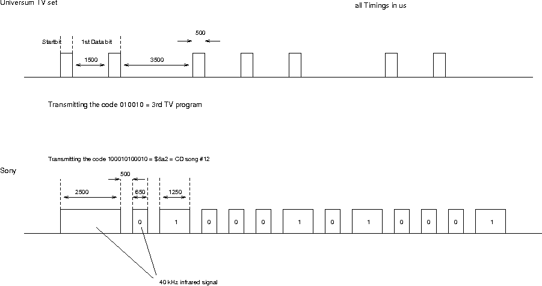

Remote control via Infrared
(C) 1997-2010 André Fachat
Who doesn't have the problem of a lot of remote controls for the VCR, the TV set, the CD player etc lying around on the table? Well, in 1990 I thought about that and implemented an infrared remote control feature in my selfbuilt 6502 system. And here is the description.
Note: This article originally is from 1997 or 1998. Today I would look into a solution with the NE555 timer chip to generate the actually 38k infrared frequency.
Table of content
Theory
How do these infrared remote controls work? Well, they send signals via infrared using Pulse Code Modulation. That means they send data bits by different pulse lengths. The infrared light is transmitted by infrared diodes. But to allow better detection, the infared diodes don't get a simple current but a 40 kHz signal. So direct current distortions (from e.g. human bodies emitting infrared!) can easily be filtered out.
After that, some kind of asynchronous data protocol follows. I have a TV set from a german company named Universum, and a Sony Receiver and a Sony CD player. A friend had an infrared receiver, so we monitored the signals of the different remote controls on an oscilloscope.
A signal normally begins with a start bit of fixed length. With the Universum TV set, the length of the break that follows determines if it is a "0" or "1" data bit. After the break, a single puls follows to start the next bit. This code has 6 bit. The Sony stuff is different, it has twelve bit. Here the signal starts with a real start bit. Then there is a fixed-length break before each bit. The length of the following pulse determines if it is a "0" or "1" data bit.
Fig. 1 shows the two signals in detail.
It can be seen that the the signals are relatively simple and the timing is not very critical.
Hardware
The hardware I used is, in general, the 6522 VIA versatile interface adapter and its timer. The VIA can produce pulse and toggle outputs on timer underruns on pins PB6 and PB7. The timers count the system clock Phi2, which has 1 or 2 MHz on my selfbuilt computer. The timer values must be set appropriately, of course.
A timer in the 6522 consists of a timer count register and a latch register. When an underflow occurs, the content of the latch register is loaded into the count register. Then the value of the count register is decremented with the system clock, until the next underflow occurs. The output line PB7 can be set to toggle when a timer 1 underflow occurs.
Fig. 2 shows the circuit used to produce the infrared signal. It is actually not what I would call a clean design of an oscillator, but at that time I didn't know about the 555 or other stuff... The output PB7 is inverted first. When the 6522 is reset, then PB7 is set as input, thus the next gate will most probably read a high signal - disabling the infrared signal. The 74LS13 (NAND with built-in Schmitt-Trigger), together with the 180 Ohm resitor and the 100 nF capacity make up the 40kHz oscillator. The values are hand-optimized (well, I looked at the oscilloscope and changed the resistor to get the right frequency. This is definitely _not_ the right way to design such a thing. It worked for me for this circuit with these resistor values twice, but that's no guarantee. You are warned!)
The inverted PB7 is given to the NAND, such that a high on PB7 disables the oscillator. The output is then given to one driver, that outputs it to the LED drivers. The LED drivers then pull the anode of the LEDs low, and produce a current that makes them send.
Software
The software is pretty simple. In Listing 1. a small menu driven program is listed that can send remote commands. The first part is all the menu stuff. Only the last part (sendsony) handles the transmission of the infrared commands.
When initialized (initir) the line PB7 is set to high output, interrupts from timer 1 are disabled and PB7 is disabled in the 6522 auxiliary control register. When a message is to be sent (sendsony), PB7 is set to toggle output, and timer 1 is started. PB7 is toggled automatically when T1 is started, so that the first timer value loaded is the length of the start bit. Immediately after that the timer latches are loaded with the length of the first break. The timer is loaded with the break time when an underflow occurs at the end of the start bit. At this time PB7 is also toggled automatically, disabling the oscillator output. This is also checked by the software, and then the timer value for the next bit is loaded into the latches. This way the latches always contain the timer value for the next phase, while the actual phase is counting.
The software has enough time to reload the latches then. Well, enough time is relative. I tried it as an interrupt device in my 6502 operating system, such that each bit toggle issued an interrupt to reload the latches. But the interrupt latency was too high to allow such an operation.
Conclusion
Together with a simple keyboard interface this circuitry allows to replace remote controls. But it also allows to control TV sets, or VCRs or other infrared controlled stuff using a (selfbuilt) computer.
The same circuitry, together with a modified version of the listed program, is implemented in the CS/A65 Gecko computer, a simple 6502 prototype board. Have a look at it at the Gecko page
References
- irtx.a65 driver source code
- irtx.def remote signal definitions
- diagram.gif schematics (source)
- signal.gif remote signal description (source)
{kind=link}
{kind=link}
Return to Homepage